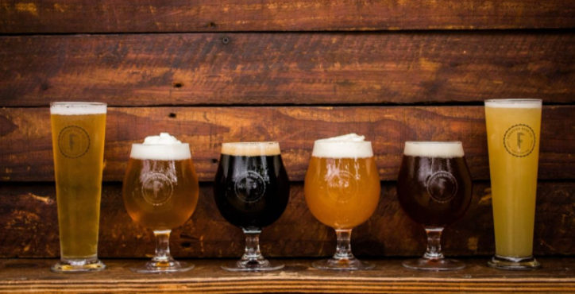
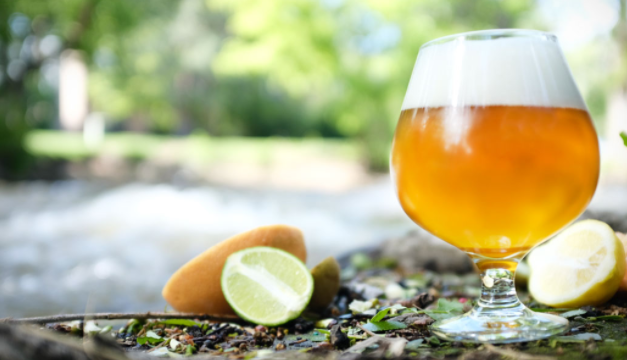

- Pale Ales(Suggested Pairing - Grilled Meats): Pale Ales are beers with a malty flavor and a golden color. They are hoppy and can taste a bit like biscuit. Some can be more bitter while others more malty.
- Dark Lagers(Suggested Pairing - Summer Sausage):
- Brown Ales(Suggested Pairing - Aged Goua):
- India Pale Ales(Suggested Pairing - Finocchiona):
- Wheat Beers(Suggested Pairing - ):
- Strong Ales(Suggested Pairing - ):
- Belgian Styles(Suggested Pairing - ):


Styles and History
Technically speaking there are over 75 different styles of beer! Craft beer began to take off in the United States during the 1960s. Home brewing became a bigger trend throughout the 1970s and 1980s. In the 1990s we began to see microbreweries.
- Scottish-Style Ales(Suggested Pairing - ):
- Sours(Suggested Pairing - ):
- Pilseners(Suggested Pairing - ):
- Hybrid Beers(Suggested Pairing - ):
- Porters(Suggested Pairing - ):
- Stouts(Suggested Pairing - ):